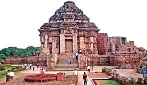
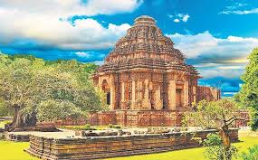
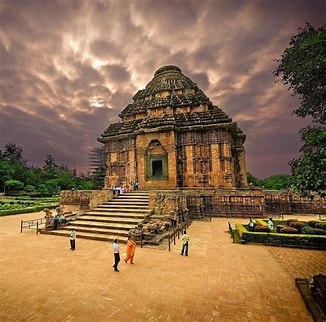

Konark Sun Temple
Konark Sun Temple, nestled in the serene town of Konark in Odisha, stands as a testament to India’s rich cultural heritage and architectural brilliance. Let’s explore this enchanting temple, which draws tourists and history enthusiasts from around the world.

Location and Significance:
- Konark Sun Temple is a UNESCO World Heritage Site located in the Puri district of Odisha.
- It covers a sprawling 54-acre site on the outskirts of Vrindavan, Mathura.
- Dedicated to the Hindu god Surya (Sun), it is one of India’s most iconic temples.
- After the Puri Jagannath Temple, Konark Sun Temple is probably the most famous tourist destination in Odisha
Architectural Grandeur:
- The temple is built out of black granite and resembles a 100-foot-high chariot carrying the Sun god across the heavens.
- Its intricate carvings, floral motifs, and semi-precious stones embedded in the walls create a mesmerizing ambiance.
- The temple’s architecture reflects a culmination of seven hundred years of relentless pursuit of perfection.



Idol Placement:
- The temple once housed a colossal statue of the Sun god, but it is no longer present.
- The main sanctum, known as the garbhagriha, was designed to capture the first rays of the rising sun.q12`
Spiritual Experience
- Visitors are awestruck by the temple’s grandeur and its depiction of the Sun god’s chariot.
- The play of light and shadow on the intricate sculptures adds to the mystical experience.
- The temple’s surroundings, with lush greenery and serene landscapes, enhance the spiritual journey.
Why Visit Konark Sun Temple?
- Architectural Marvel: Appreciate the intricate carvings, wheels, and sculptures that narrate ancient stories.
- Spiritual Connection: Immerse yourself in the temple’s spiritual aura and connect with the divine.
- Photographic Delight: Capture the temple’s beauty against the backdrop of the azure sky.